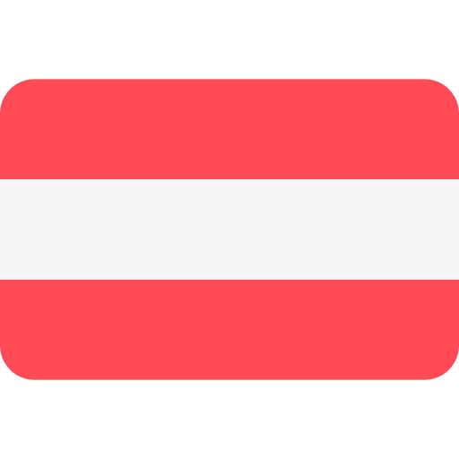
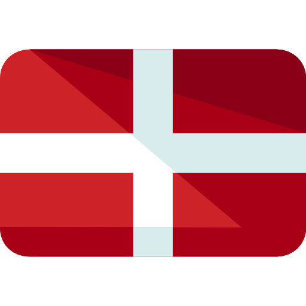

Dejan Bondokic
Basic information about the person:
- Bondokic
- Dejan
- 23.02.1972.
- 1.85cm
- 110kg
Last name:
First name:
Birth date:
Height:
Weight:

Text about Dejan
Dejan is my father who took care of us. He was born in a difficult period in the state of Yugoslavia, in what many consider a golden time, but not so good because of the war. He lived in the country and didn't really have everything he wanted. He also participated in the war as a truck and ambulance driver. As a child, he spent his time at home or playing with his friends, when he grew up he went to the same school in the village where he lived, and finished high school in Belgrade. He graduated from school to become a ship captain, a job he never did, he was only a few times in an internship where he was the best, but he was attracted to something else. Namely, business, trade, work, the market... He never worked on any ship, but that's why he visited all possible markets. He has been doing this job for 23 years and is very good at it. Over the years, he adapted his business to his clients and improved it. Today, he has two sons who make him very happy and who help him with the business and the store and everything else. He is in a happy marriage, which makes the family even stronger and happier.
Primary school
He finished primary school in his village where he lived as a child. At school, he was very good compared to other students, his friends. He helped everyone and gave them tests, which in the end ended badly because they all ended up somewhere abroad and he stayed in Serbia fighting and working hard. Maybe it's better that he stayed in his country and didn't go abroad, to be his own boss. The village school was not well equipped, but it was good for that time. They had strict teachers and strict punishments if you didn't want to listen, so real and honest people came out of those schools.

High school
Due to the bad financial situation, his parents could not enroll him in high school and did not want to, but Dejan took matters into his own hands, ran away from home and went to Belgrade to enroll and study at high school. He enrolled in high school to become a naval captain, he lived in the dormitory where all the other pupils and students lived. There were ten in the room, it was a big problem, but that's how it was before. The parents did not know what was happening to him or what he was doing or where he was, they did not send him even a Dinar. Only Dejan knows how he survived and how he finished high school. He successfully finished school and, of course, received a diploma and a ship's certificate, which allow him to work on a ship. In Belgrade, he passed the test for a car for the first time, which is impressive for me. In fact, everything that Dejan has experienced is impressive. For me, my father has always been the captain of the ship and always will be, he is the leader of the road, he is responsible for everything. Unfortunately, he did not continue this job because he had to go to the army and after that he did various other jobs, which is why he ended up in the business world.

Dejan in the army
Dejan was in the army for 8 months, where he worked as a truck driver and an ambulance driver for the former Yugoslavia. For a boy from the country it was very strange and difficult, but it had to happen. It was very difficult and tiring for him because sometimes he had to drive 3 days in a row without stopping or taking a break. I think it's very awkward and strange and difficult. He successfully completed the army, all the more so and was released home early due to the fact that he did not take leave even once.
What was Dejan doing after the war?
Dejan finished school and became a naval captain in Belgrade, but, unfortunately, the war started and Dejan had to go there. After the war, he did not continue his work as a ship captain, but had to do something else. His first real job was in catering, he worked as a waiter. He started in a cafe that serves people, he was very good at that job and he also knew how to make some cakes, such as baklava, tulumbe. He worked in two cafes and after that he started selling things at flea markets and markets.
Dejan and his work at the market
Dejan started his first real business when he started working in markets and flea markets. It started by selling various things, such as mugs, plates, sponges, everything for the home, but then it looked much different than today. He worked for himself, he had no employees and the counter was not too big either. His wife helped sometimes when she had time. Dejan transported goods in a "Jugo" car, which was his first vehicle in which he transported goods and with which he went to various markets, flea markets and fairs. It was a gray car, it was very small and there was not much room in it, considering that it was full of goods. With the passage of time, Dejan improved his skills in selling goods, got another vehicle, changed his place of sale and enlarged the stall. Of course, even then everything was not great, but after fifteen years, Dejan managed to improve his work and skills to the maximum and, of course, to open his first store, which he still owns today. The store looks much bigger today than the stalls looked then and of course the store is well equipped, Dejan no longer has to struggle or stand in the cold, rain or wind. Today, Dejan is also helped by his sons, which makes his work much easier. My brother, and his son has progressed so much that today he is the owner of the company "BONDI".
These are all the cars that Dejan has owned over time
He did not own many cars, but he changed cars depending on his financial situation and the needs of the business. Every car was his favorite and he never complained that the car was bad.
Fica
1990-1999"Fica" was his first car that he had when he was young. It was a two-door yellow "Fica" that he bought with his hard-earned money.
Jugo
1999-2005"Jugo" was the second car he bought for business reasons, because he used it when he started selling in the markets. In it he transports goods and transports them from one place to another. The car served him well and that car was very famous at the time and it was prestigious to have it.

Ford
2005-2008"Ford" was his first family car that he owned. The car was gray and bigger than all the previous ones. The car was crashed by other people, which forced Dejan to change it quickly and buy another one. Of course, the car served well and Dejan had no problems with it.

Opel Astra
2008-2010"Opel Astra" was his second family car, it was a caravan model of that brand and it was very long. He served well, he helped Dejan a lot in the transport and procurement of goods. It had a large trunk and was comfortable for the time. I traveled to various destinations with that car and never had a single problem. Once I did 2000km in a week and the car worked perfectly normally and I had no problems.

Renault Megan
2010-2015"Renault Megan", also a caravan model of this brand, somewhat newer in appearance, was Dejan's fifth car. Also, a very spacious and long car that was convenient for cargo because it had a large trunk. Also, this car was a family car, convenient for traveling, it was blue in color and I kept it for five good years.

Peugeot 407 SW
2015-2018"Peugeot 407 SW" was a rocket of a car. It was black in color and looked very powerful, and its interior resembled a spaceship. It had so many buttons that I didn't know what function it did at the time. It was a well-equipped car that was bought abroad. It had a large trunk and was comfortable for travel, as a family car it worked very well. The only disadvantage of the car that Dejan didn't like was that it was very low, which Dejan didn't like because when he put the goods in the car, the car lowered to the extent that it stuck to the asphalt of the road, which forced him Dejan to quickly change the car and take something higher and bigger, which Dejan did.
Peugeot 5008
2018-2023"Peugeot 5008" is the last car that Dejan has bought so far. He bought it for business reasons and also the car is comfortable and convenient for travel. The car is like a jeep, tall and big. Inside there is enough room for each person and the seats are comfortable.
Where did Dejan travel ?
In his youth, Dejan did not travel much abroad, he was more in the country and worked around the house. When he grew up and started working, he saved money and always wanted to travel. He traveled when he was in high school and when he was a judge. Over time, Dejan began to travel and tour the world. When I founded the company and started working, that's how he started to earn money, that's how he also started to travel. He has visited many countries so far, but he wants to visit even more.
Dejan visited the following countries:
- Romania
- Bulgaria
- Croatia
- Bosnia si Hertegovina
- Ungaria
- Austira 


- Germania
- Danemarca 
- Franta
- Italia
- Spania
- Monaco
- Turcia